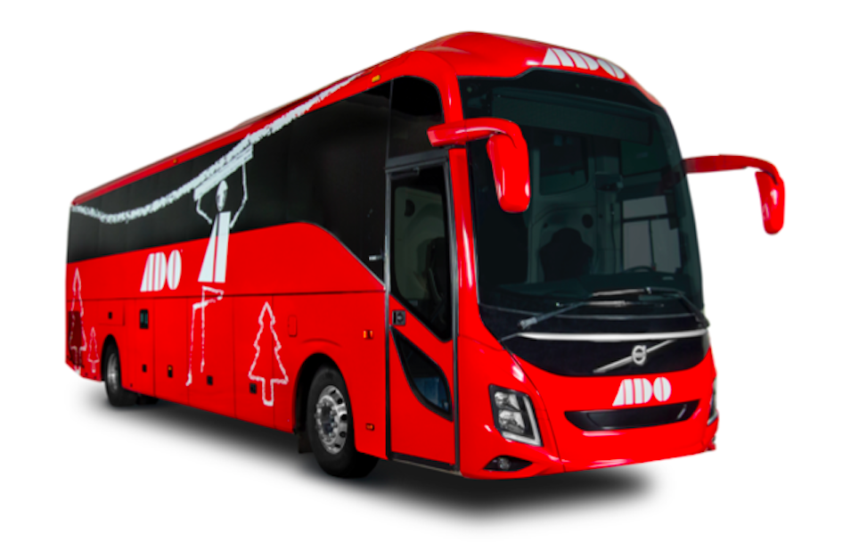
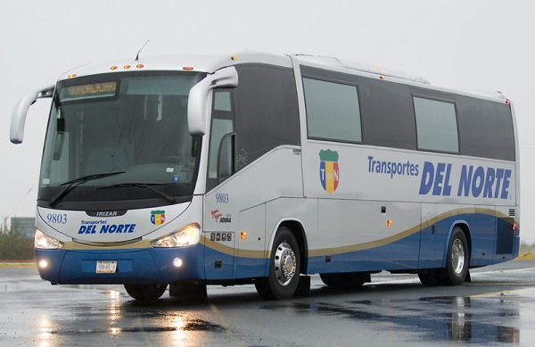
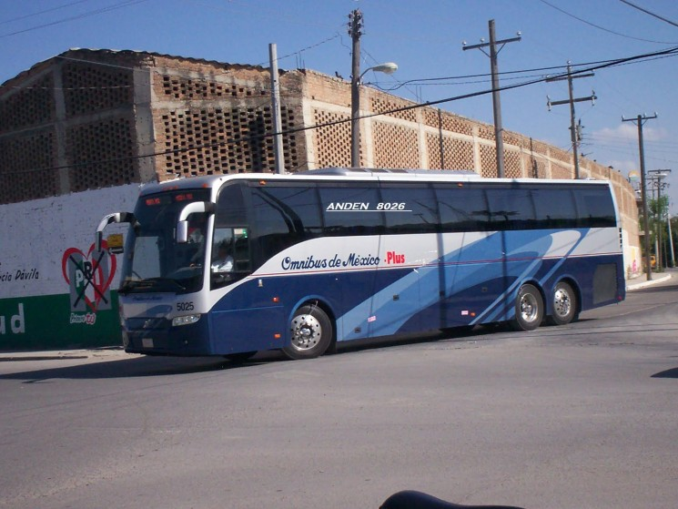
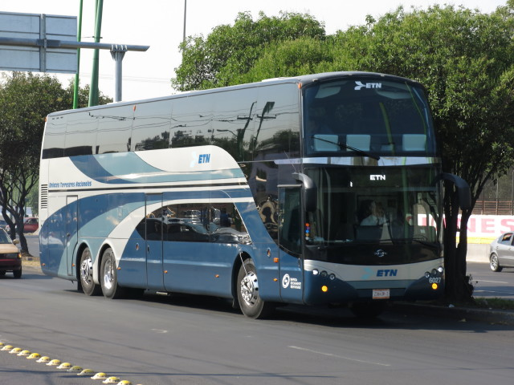
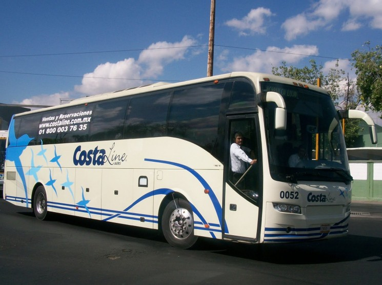

En esta primera seccion puedes conocer algunos de las compañias de camiones en Mexico donde puedes ver que compañia de camiones te funciona mejor:
Autobuses de Oriente
Conocido por: ADO es una de las compañías de autobuses más grandes del mundo y el líder de México en la industria de autobuses.Cobertura: península de Yucatán, Quintana Roo, Yucatán, Campeche y Chiapas.
Prestaciones: Wi-Fi, baños a bordo, tomacorrientes, TV, pantallas de TV individuales, espacio extra para las piernas, asientos reclinables.
¿Se pueden cambiar los billetes?: Si, solo se pueden cambiar en la estación.
Requerimientos para subir a bordo:Bebe presentar sus boletos impresos o en un dispositivo móvil y una pieza válida de I.D. con una foto y tu nombre y apellidos.

Grupo Senda
Conocido por: El Grupo Senda cuenta con rutas que cruzan ambos lados de la frontera de México y EE.UU.Cobertura: Aguascalientes, Chihuahua, Coahuila, Durango, Estado de México, Jalisco, Nuevo León, Querétaro, San Luis Potosí, Sinaloa, Tamaulipas, Georgia (EE.UU), Carolina del Norte (EE.UU.) and Texas (EE.UU.)
Prestaciones: Conexión inalámbrica a internet, comida y bebida de cortesía, aseos a bordo, aire acondicionado, enchufes, televisión, pantallas individuales de televisión, espacio extra para las piernas, asientos reclinables.
¿Se pueden cambiar los billetes?: Si, sólo se pueden cambiar en la estación.
Requerimientos para subir a bordo: Tienes que presentar tus billetes impresos y una identificación válida con fotografía y tu nombre y apellidos.

Omnibus de México
Conocido por: Omnibus de México cuenta con una de las redes más extensas del país y cuenta con rutas en alrededor de dos terceras partes de los estados mexicanos, principalmente aquellos al Norte, oeste y este de la capital.Cobertura: Aguascalientes, Estado de Colima, Estado de México, Jalisco, Nuevo León, Querétaro.
Prestaciones: Conexión inalámbrica a internet, comida y bebida de cortesía, aseos a bordo, aire acondicionado, enchufes, televisión, pantallas individuales de televisión, espacio extra para las piernas, reposa piernas, asientos reclinables.
¿Se pueden cambiar los billetes?: Si, sólo se pueden cambiar en la estación.
Requerimientos para subir a bordo: Tienes que presentar tus billetes impresos y una identificación válida con fotografía y tu nombre y apellidos.

ETN y Turistar Lujo
Conocido por: ETN es una de las mejores compañías de lujo en México. Con sólo 24 asientos y una configuración de 3 asientos atravesados (en lugar de la más común de 4 que encontramos en la mayoría de las compañías), puedes incluso conseguir un asiento individual.Cobertura: Aguascalientes, Coahuila, Estado de Colima, Durango, Guerrero, Jalisco, Estado de México, Michoacán, Nayarit, Nuevo León, Querétaro y San Luis Potosí.
Prestaciones: Conexión inalámbrica a internet, comida y bebida de cortesía, aseos a bordo, aire acondicionado, enchufes, televisión, pantallas individuales de televisión, espacio extra para las piernas, reposa piernas, asientos reclinables, asientos cama.
¿Se pueden cambiar los billetes?: Si, sólo se pueden cambiar en la estación. Para cualquier cambio necesitarás traer una versión impresa de tu billete.
Requerimientos para subir a bordo: Puedes mostrar una versión en formato PDF de tu billete en tu teléfono, pero deberás presentar una identificación válida con foto, nombre y apellidos.

Grupo AERS (Costaline, Futura, Turistar Ejecutivo)
Conocido por: El grupo AERS ofrece diferentes líneas de autobuses para atender a una amplia gama de clientes en función de sus necesidades y presupuestos.Cobertura:Michoacán, Guerrero, Morelos.
Prestaciones: comida y bebida de cortesía, aseos a bordo, aire acondicionado, televisión, pantallas individuales de televisión, espacio extra para las piernas, reposa piernas, asientos reclinables.
¿Se pueden cambiar los billetes?: Si, sólo se pueden cambiar en la estación. Para cualquier cambio necesitarás traer una versión impresa de tu billete.
Requerimientos para subir a bordo: Puedes mostrar una versión en formato PDF de tu billete en tu teléfono, pero deberás presentar una identificación válida con foto, nombre y apellidos.